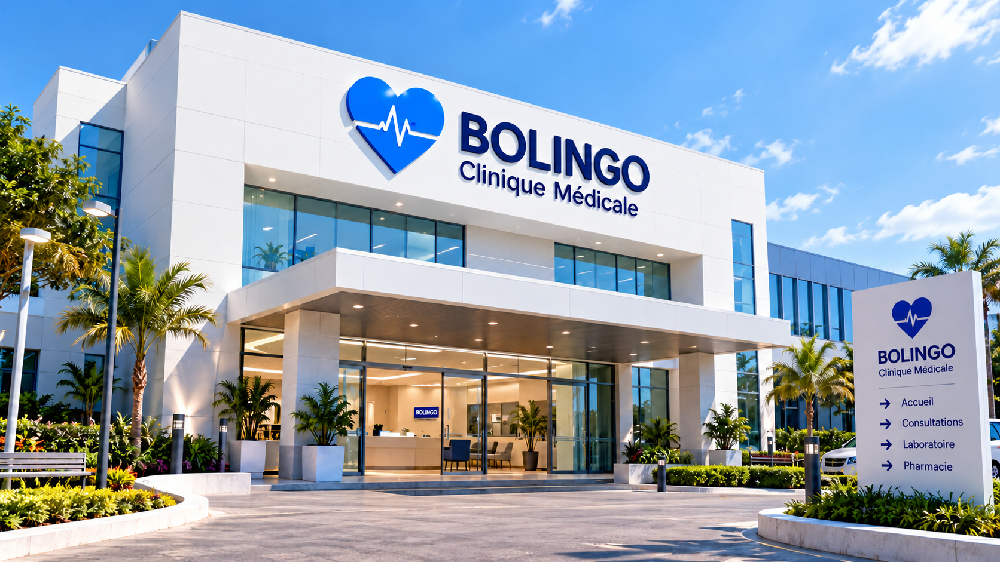
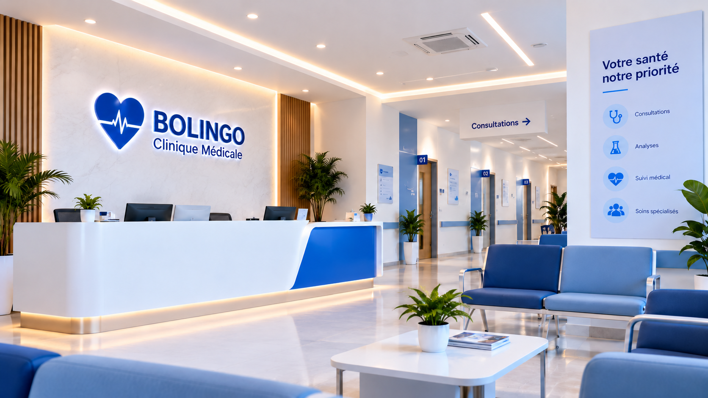

Des professionnels qualifiés
Une équipe de médecins expérimentés et engagés.
À propos de Bolingo
Bolingo est une clinique médicale moderne qui met la santé et le bien-être de ses patients au cœur de ses priorités. Nous combinons expertise médicale, équipements modernes et accueil humain pour vous offrir des soins de qualité.
Notre mission
Une équipe de médecins expérimentés et engagés.
Une prise en charge attentive à chaque étape du parcours.
Une écoute attentive et un accompagnement personnalisé.

Notre histoire
Bolingo est née de la volonté de proposer des soins accessibles et de qualité à Kinshasa. La clinique s’est développée autour d’une vision simple : placer le patient au centre de toutes ses actions.
Notre mission : accompagner chaque patient avec attention, faciliter son accès aux soins et proposer un parcours médical clair, dans un environnement accueillant.
Quelques chiffres
Nos valeurs
Votre santé et votre bien-être sont notre priorité.
Des soins fondés sur l’expertise et l’éthique médicale.
Une écoute attentive pour chaque patient.
Toujours évoluer pour mieux vous servir.
Notre équipe est à votre disposition pour vous aider.